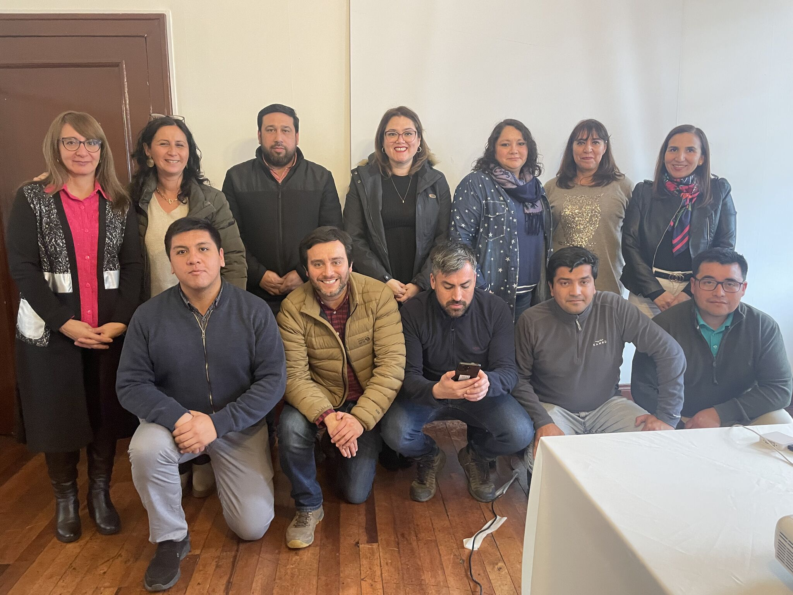
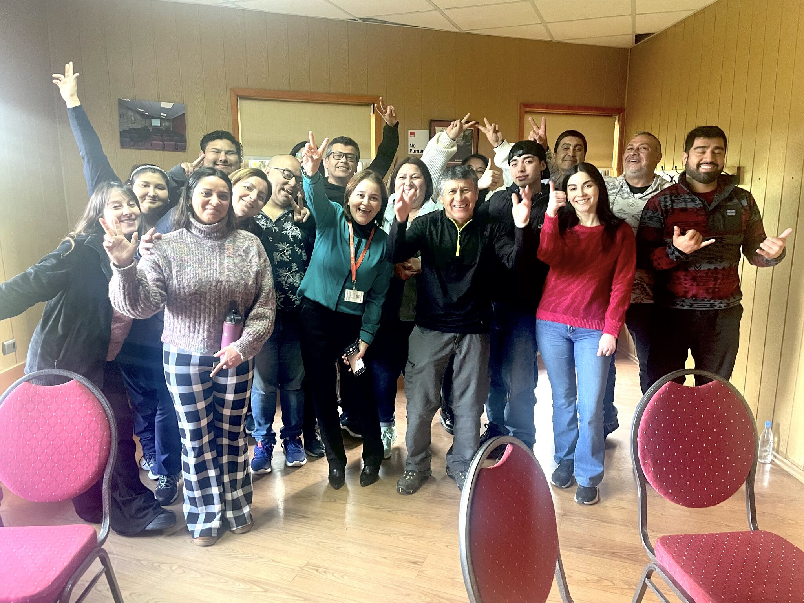
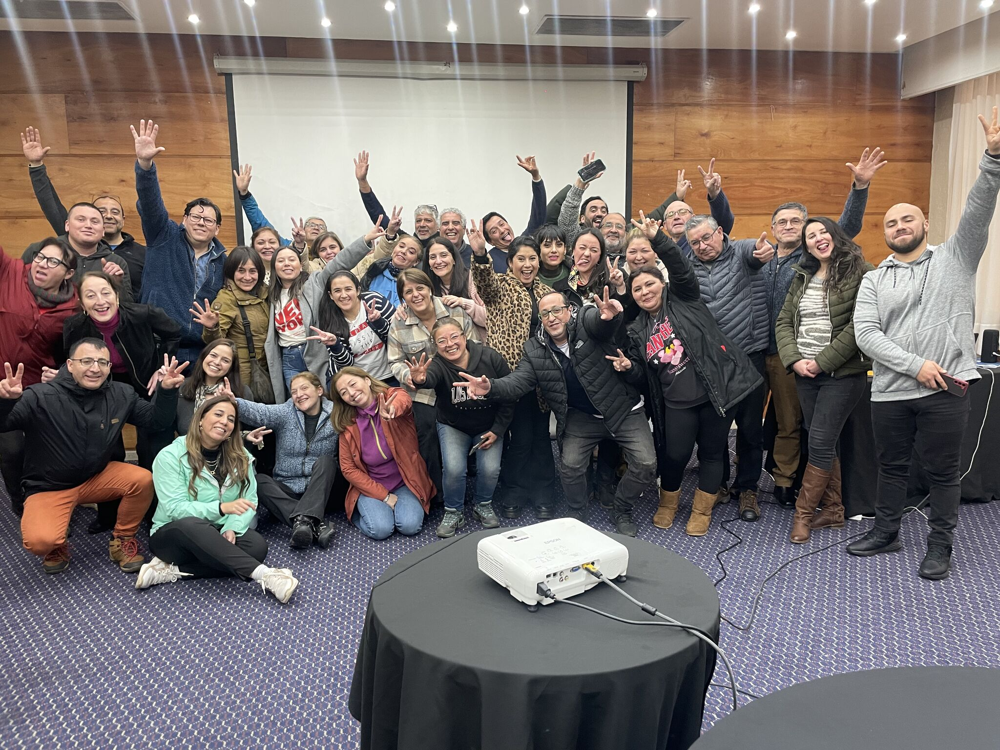
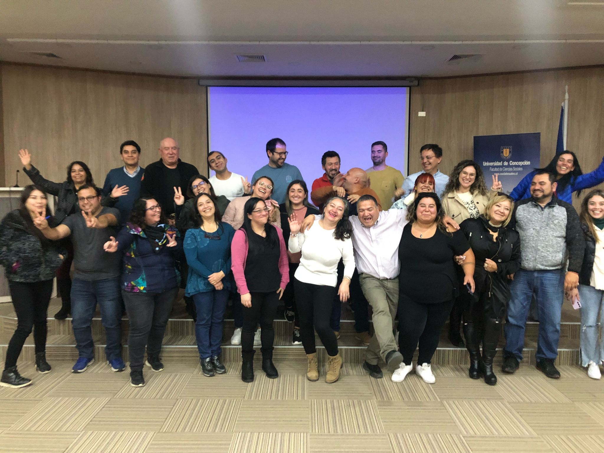
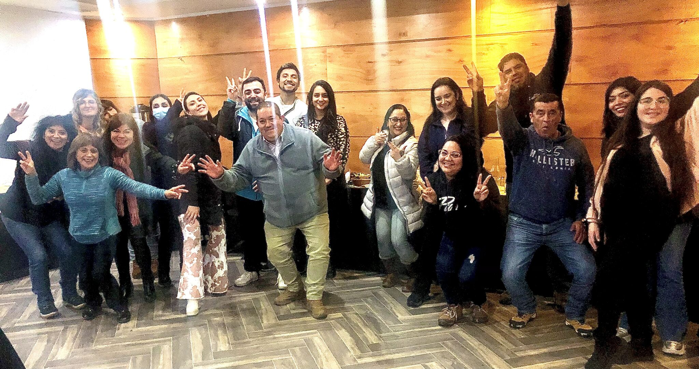
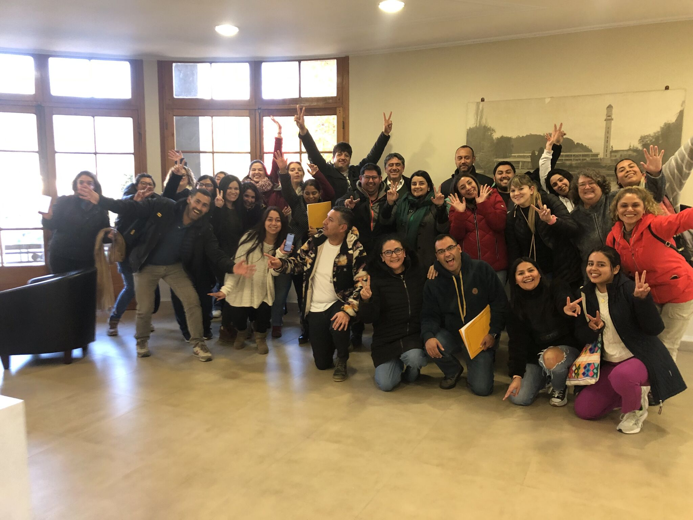
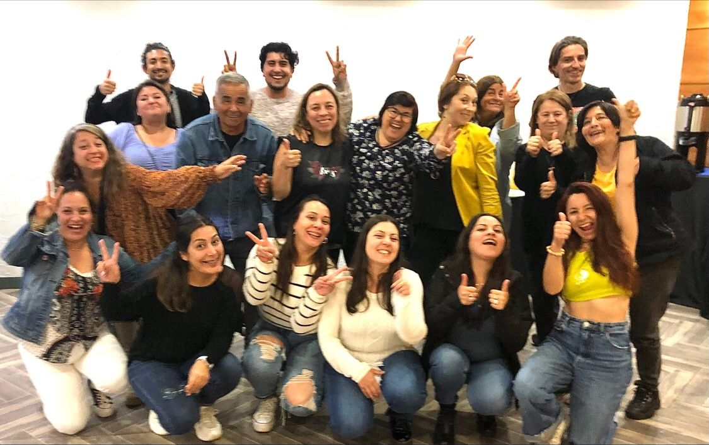

Curso de Humanización
DAS San Pedro de La Paz, Región del Biobío. Programa dictado a través de OTEC UdeC.
Experiencias de aprendizaje profundo diseñadas para transformar líderes, cohesionar equipos y rediseñar la cultura organizacional.
Mi propuesta de capacitación y jornadas experienciales se fundamenta en el aprendizaje desde la aceptación del otro como legítimo otro. El objetivo no es solo transmitir información, sino construir equipos, crear lazos sólidos, aprender a escuchar, preguntarnos y reflexionar en el hacer. Las intervenciones que realizo buscan dotar a las organizaciones de herramientas de liderazgo, resolución de conflictos e intervención en crisis para navegar la incertidumbre promoviendo siempre una cultura del buen trato.
DAS San Pedro de La Paz, Región del Biobío. Programa dictado a través de OTEC UdeC.

Etapa cumplida en la Asociación Latinoamericana de Estudios Freudianos de Buenos Aires, culminando la parte final del posgrado junto a colegas de toda Latinoamérica.

Campos Clínicos en Chiguayante, Biobío. Enfoque en intervención en crisis ante acontecimientos de violencia.

Jornada diseñada para los profesionales de Administración de Infraestructura. Iniciativa del Área de Desarrollo de Talento.

Intervenciones para instituciones y su personal que atraviesan momentos de alta complejidad producto de la crisis social actual.

Jornada experiencial y taller práctico enfocado en el manejo de emociones para el equipo del Cesfam Tomé.

Abordando las experiencias reales de los equipos de salud: cómo trabajar manteniendo el enfoque y el cuidado humano en tiempos de incertidumbre.

Capacitación en salud pública para el Cesfam San Pedro. Desarrollado junto a la unidad de Campos Clínicos UdeC.

Herramientas de liderazgo enfocadas en el trabajo cohesionado en equipo. Realizado para el Cesfam San Pedro de la Paz, UdeC Campos Clínicos.

Taller intensivo en "Trabajo en Equipo" para DAS Biobío UdeC y Cesfam Hualpén (Abril 2024), centrado en la construcción de lazos sólidos.